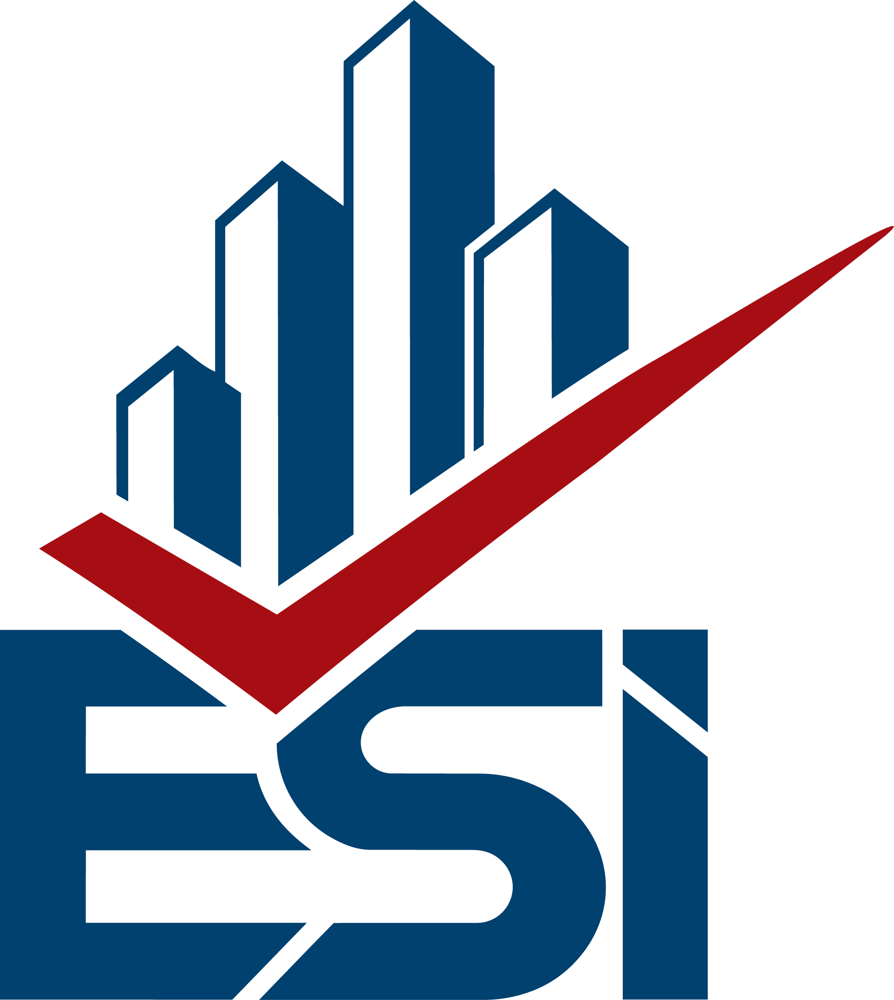
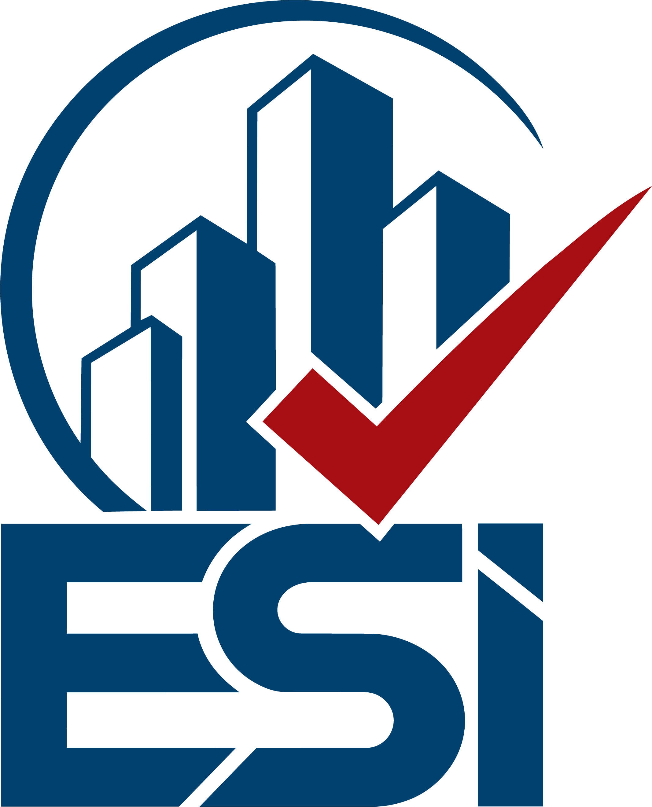
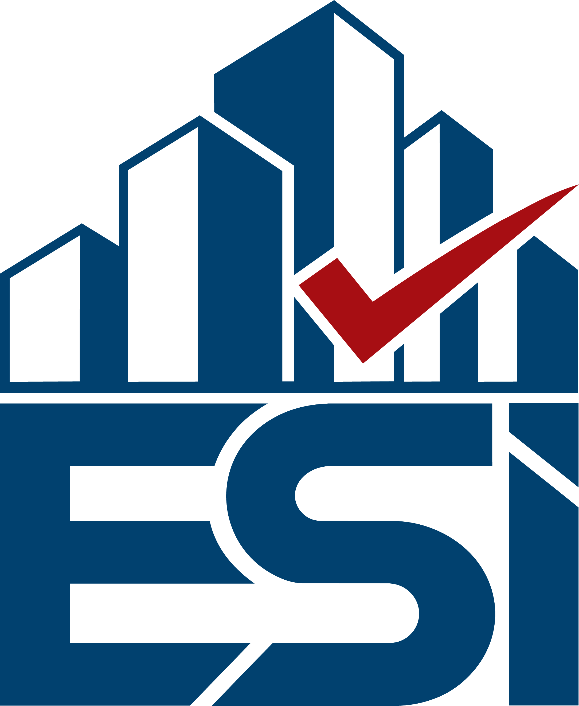
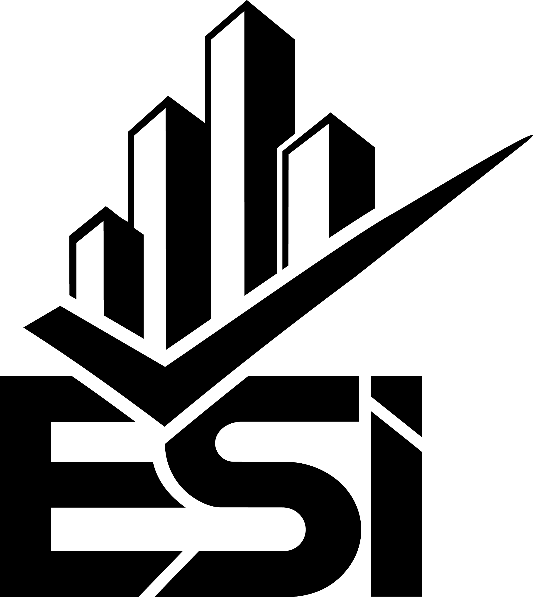
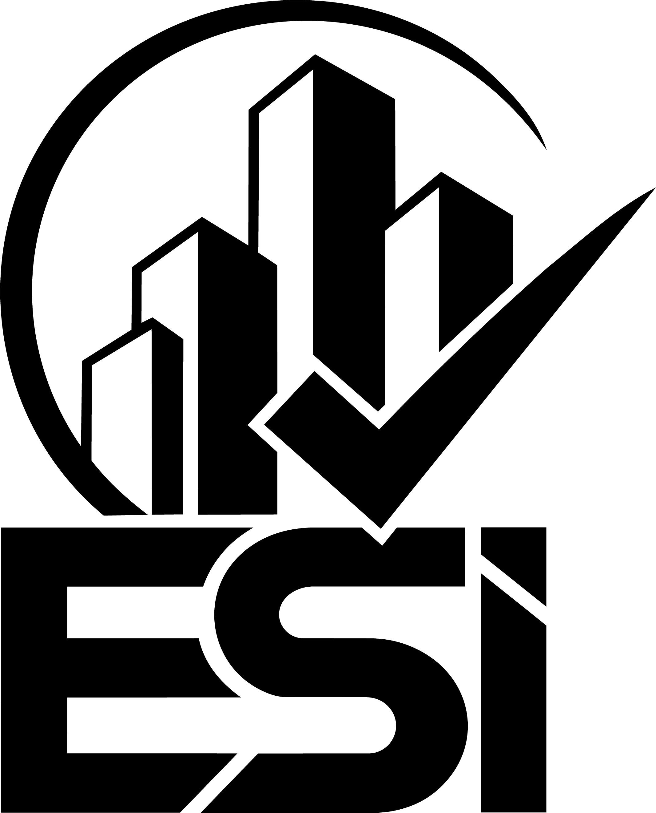
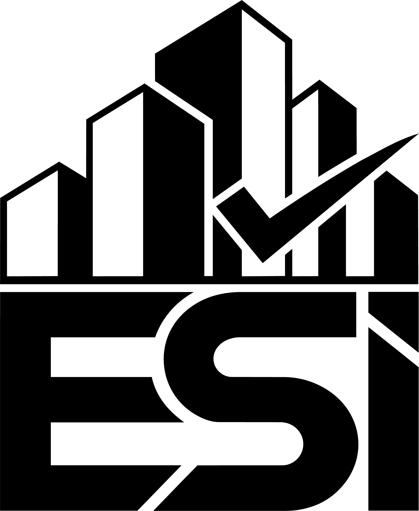
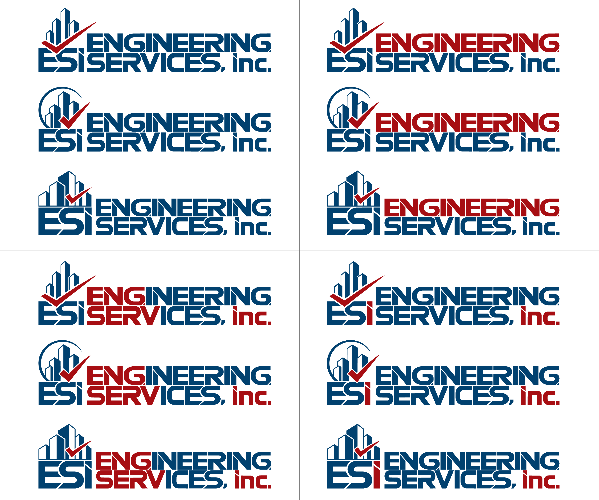

Three new mark variations built on Oscar's latest direction — simplified, printable, and built to last. A cleaner building, a bolder checkmark, a more readable blue. Every decision has a reason.

The building silhouette and red checkmark work together without any enclosing frame. The checkmark sweeps diagonally through the composition, giving the mark energy and direction. The open structure means the eye reads both elements simultaneously and the whole thing prints cleanly at any size — from a business card to a truck wrap.

The circular enclosure gives the mark a badge or seal quality that reads immediately as authority and certification. The building and checkmark sit within the arc, reinforcing the idea of a completed, approved inspection. This variant works particularly well as a standalone emblem — embroidery, stamps, official report headers, profile images.

A tighter, more structured interpretation where the building and checkmark are contained and grounded. The proportions are more vertical, making it the cleanest performer at very small sizes. This is the variant that will still read on a pen, a favicon, or a 16px app icon without losing its meaning.
For dark backgrounds, embroidery on dark fabrics, reversed digital applications, and any context where the full-color version cannot be used on a dark surface.
For letterpress, embossing, single-ink print, official inspection reports, legal documents, government permit applications, and any single-color application.



Four color combinations using only the two brand colors — deep crimson and midnight blue. Each block presents all three logo variations (V7a, V7b, and V7c) in the same color treatment, showing how red and blue can be distributed differently across the mark and the wordmark while the identity stays consistent and immediately recognizable.

Deep Crimson is the dominant brand color. It appears in the checkmark, primary CTAs, and all accent elements. It signals urgency, accountability, and action.
#01416f Midnight Blue is the updated secondary color. Unlike the previous darker navy, this value maintains clear distinction from black when used as body text on white surfaces — solving the legibility issue in reports and documents.
No variants, no tints, no additional colors without explicit approval.
● Crimson on White — primary brand pairing, headings, CTAs
● Navy on White — body text, UI, links, secondary type
● White on Crimson — reverse CTAs and highlight banners
● White on Navy — dark-mode headers and reversed applications
● Crimson on Navy — accent text on dark branded backgrounds
● Navy on Cream — document body text, report typography
Two typefaces from the Barlow family deliver a unified typographic voice built for authority and clarity. Condensed for headlines. Regular for content. Both for a firm that values precision above everything.
| Attribute | Specification |
|---|---|
| Brand Name | ESi — uppercase E, uppercase S, lowercase i. Proprietary capitalization. Never alter under any circumstance. |
| Never Write | ESI / Esi / esi / E.S.I. — only "ESi" is correct in all materials without exception. |
| Variations | V7a (Open Mark) · V7b (Circle Mark) · V7c (Compact Mark). Use consistently within each application context. |
| Primary Color | #a70e13 Deep Crimson — checkmark, accent elements, primary CTAs. |
| Secondary Color | #01416f Midnight Blue — lettermark, body text, building silhouette, secondary system elements. Clearly distinguishable from black on white surfaces. |
| Dark Backgrounds | White single-color versions (aw, bw, cw) — all reversed and dark-field applications. |
| Single-Color Print | Black silhouette versions (ab, bb, cb) — letterpress, embossing, legal documents, single-ink forms. |
| Minimum Size | Full lockup: 120px screen / 1 inch print. Icon only: 32px screen / 6mm print. |
| Clear Space | Maintain space equal to the cap-height of the "E" on all four sides in every application. |
| File Formats | Production master: SVG or EPS vector. Screen: PNG at 2x minimum. Print: PDF or EPS. Never JPG for production logo output. |
| Territory | South Florida · Tri-County · Miami-Dade primary · Broward secondary · Palm Beach future |